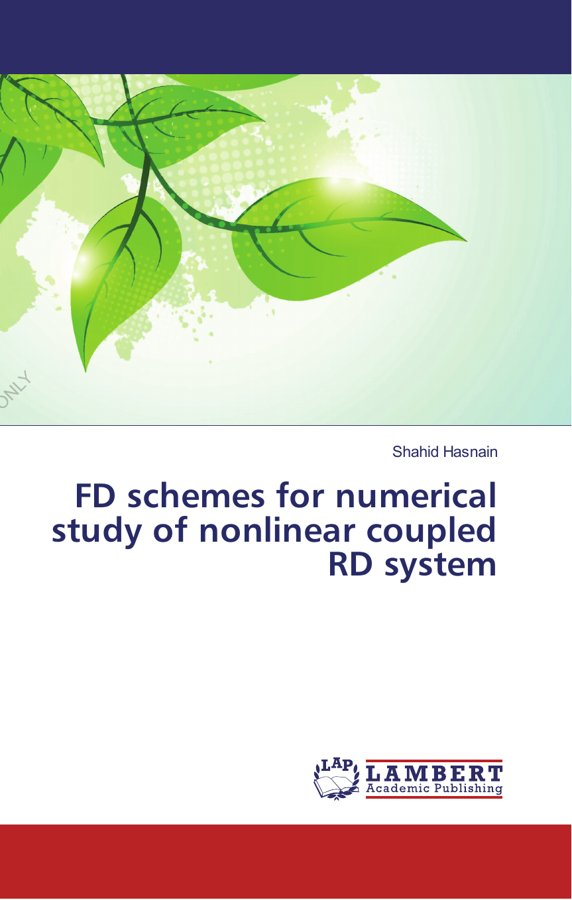
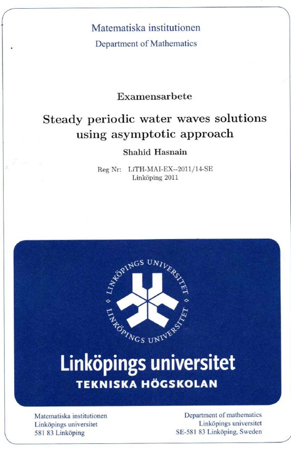

The full list with citation metrics is on my Google Scholar profile.
My two research dissertations: the PhD work on finite-difference schemes for reaction–diffusion systems, later published as a book, and the MS work on steady water waves.

PhD thesis · published as a book
FD schemes for numerical study of nonlinear coupled RD system
Shahid Hasnain · LAP LAMBERT Academic Publishing, 2018
Reaction–diffusion equations describe how chemicals, populations or tumour cells spread and react with each other. This book compares the main finite-difference methods for solving them: explicit and implicit schemes, for single equations and for coupled systems in one and two dimensions, with the Fisher–KPP equation as a test case. For each scheme it checks the three properties that decide whether a numerical answer can be trusted (consistency, stability and convergence) and measures accuracy against computing cost. It also shows how a variable grid puts extra points where the solution changes fastest.
Based on
PhD dissertation, King Abdulaziz University, Jeddah, approved 2017
Supervisor
Prof. Daoud S. Mashat
ISBN
978-620-2-00792-4

MS thesis
Steady periodic water waves solutions using asymptotic approach
A steady water wave in a channel of finite depth has two fixed quantities: the height of the wave and the flow force, the total push of the water through the channel. This thesis asks how the two are related for waves of small amplitude. Using an asymptotic (small-parameter) expansion together with separation of variables, it builds every such wave step by step, then shows numerically that the flow force increases steadily with the wave height.